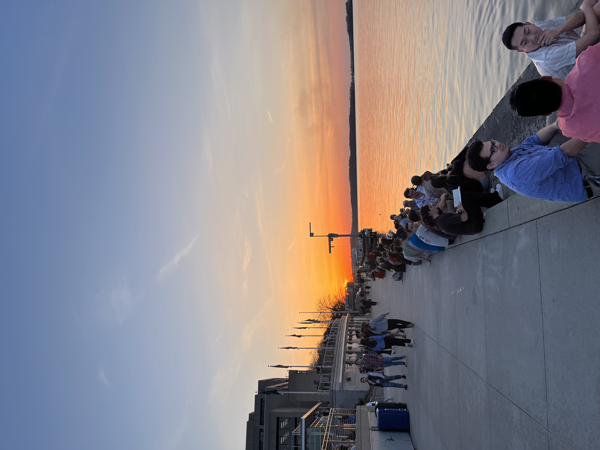
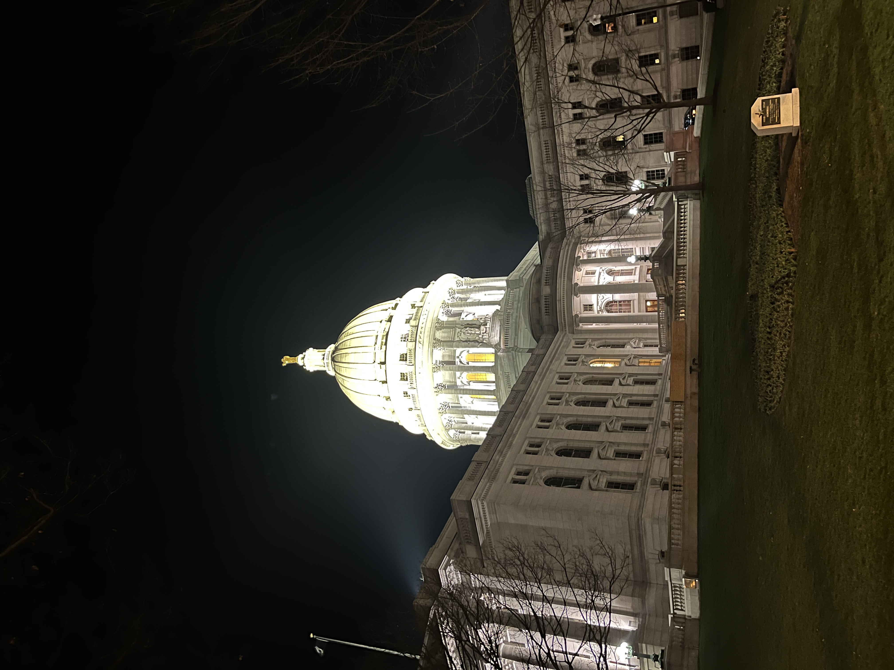
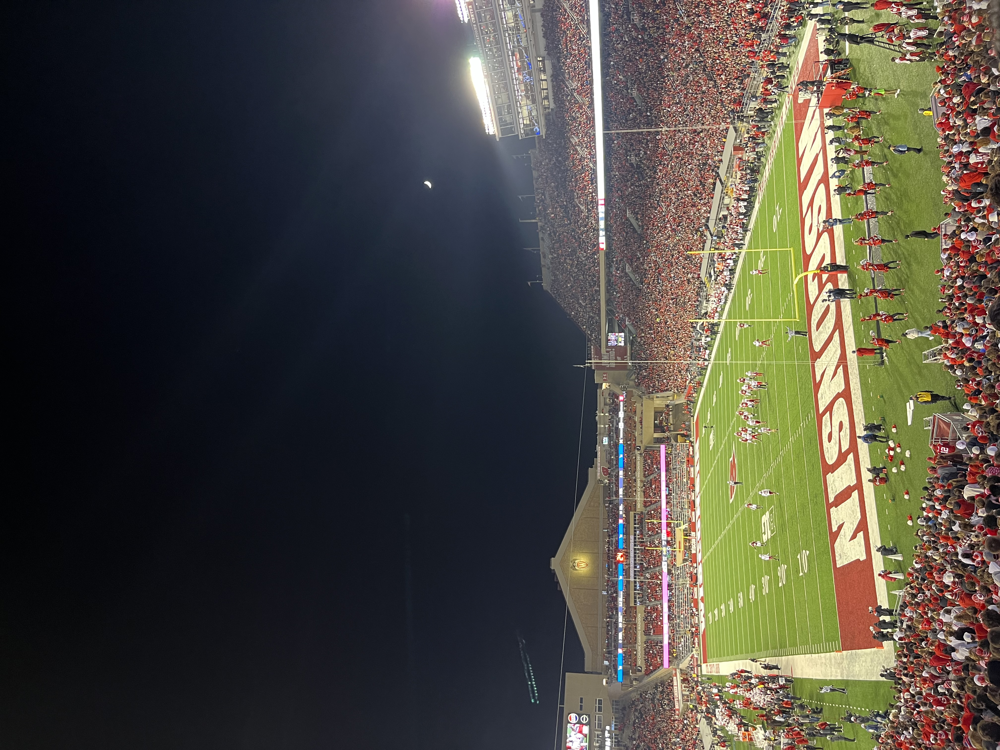

Madison
Currently, I am a junior at the University of Wisconsin-Madison, and I have been able to call Madison my home for the past 3 years. On this page I wanted to show some of my favorite places in Madison, and some of my favorite things to do here!
The Terrace

The Terrace at Memorial Union is one of my favorite places here in Madison. I love going there, especially in the summer when all the colored tables and chairs are out. It is my favorite place to go and get ice cream, listen to live music, or watch the sunset on campus.
The Capitol
The Capitol is a place I have come to love here. I like being able to go in and explore the inside of it. Another thing that I like is the Dane County Farmer's Market that is located right outside the Capitol from the Spring to the Fall. It is especially pretty to look at during nighttime when it is all lit up.

Camp Randall

Camp Randall is a place that I have always loved in Madison. I went to football games there as a kid, and now being able to go there for games as a student feels like a full circle moment for me! The atmosphere there is never short of amazing and I love being able to spend my Saturday's there in the fall.